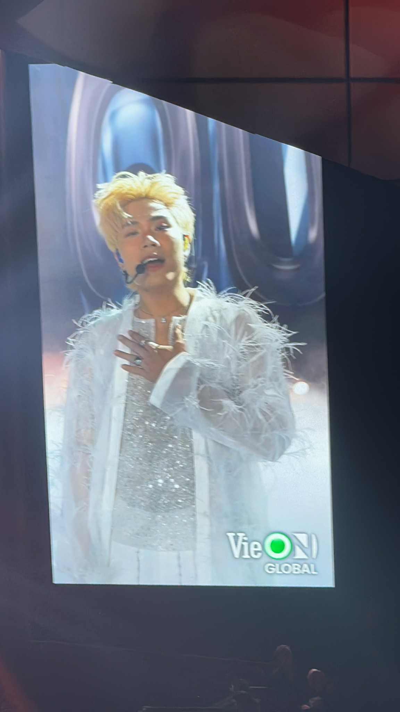
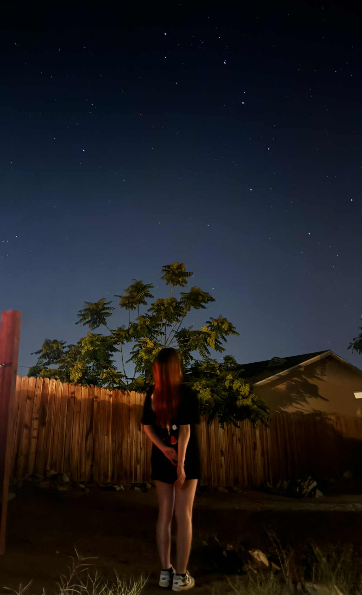
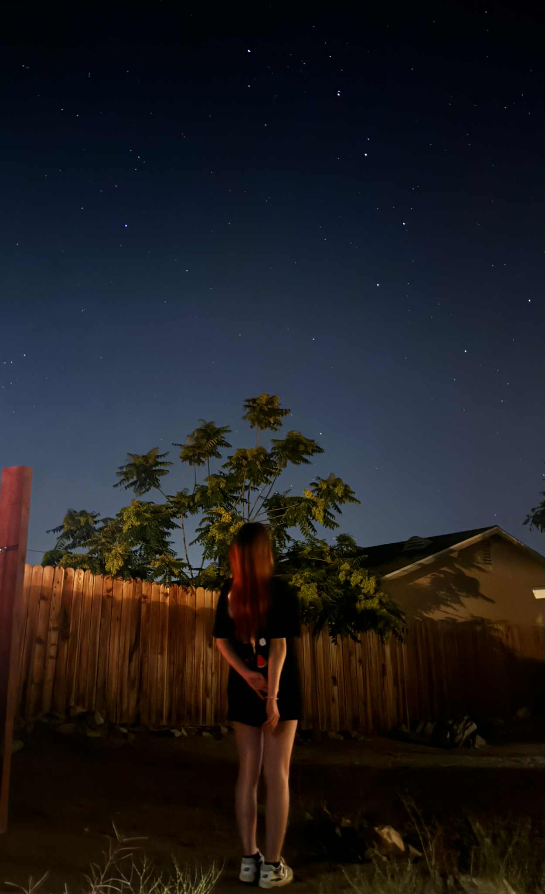

Exploring new places and creating unforgettable memories!
San Jose
San Jose, the 2nd Vietnamese city in the US, is known for its vibrant culture and history. I visited several interesting places during my trip, from San Jose to Carmel-by-the-Sea. Each location offered a unique experience and a glimpse into the local culture.
Places I have Visited
-
Point Lobos State Natural Reserve
-
Monterey Bay Aquarium
ps: I am obsessed with the Jellyfish! Just look at these:
Mesmerizing jellyfish 🪼 Another jellyfish view 🪸 -
Stanford University
Las Vegas
Las Vegas, known as the Entertainment Capital of the World, is famous for its vibrant nightlife and 24-hour casinos. I mainly come here for the shows of my favorite singers from Vietnam and didn't have much time to explore the city. However, I did get to experience the lively atmosphere and enjoy some great performances.
Some 'main content' of the concert
Click to see what I got!
I got some cards from them!!!!
Joshua Tree
Joshua Tree National Park is a unique and beautiful destination known for its stunning desert landscapes and iconic Joshua trees. It is a great place to escape the hustle and bustle of city life.
Highlights of My Visit
-
Cooking by ourselves
-
Stargazing at night
 

-
Enjoy the heat